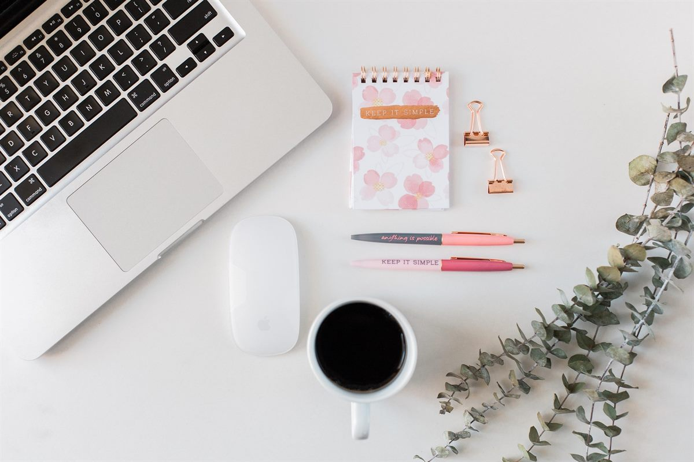

Yazarın Not Defteri #4
Geleceğin Yağması
Elbette ben de bu furyadan kendi payıma düşeni fazlasıyla alıyordum. Fazlaydı çünkü sadece okumakla değil, ama yanı zamanda yazarak da o romanlara meydan okuyordum. Elimde hala bir nüshası bulunan, tipik bir Beyaz Dizi kapağıyla süslemeyi de ihmal etmediğim, aşk romanımı mı, trajedi harikası mı belli olmayan o sayfalara şaşkınlıkla bakıyorum şimdi. Giderek; sadece geçmişi unutmamak için değil, sadece kendi hikayemin kurgusunu yazabilmek için değil, ama özellikle hayatımdaki kırılma anlarını anlatmak, o kırıkların içinden çıkan hediyeleri de bir şekilde insanlara ulaştırmak boynumun borcu haline geliyordu. Yazma serüvenim, benim gibi konuşmakta zorlananlara sözcüklerle bir ilk yardım ulaştırma isteğine dönüşüyordu giderek.
Neredeyse tüm kitaplarını okuduğum ve öğretmenim olma ayrıcalığına sahip olduğum hayatımdaki ikinci önemli isim Feyza Hepçilingirler’den duyunca o soru yeniden beynimde yankılandı: Yalnızlığımın içinde bana eşlik etmekten öteye gidememiş günlüklerimden kime neydi? Kafamda bu işin başka yollarını kurcalama fikri iyice yerleşmeye başlıyordu ve ben bu konuşmadan yıllar sonra bir kurgu ile derdimi anlatmaya niyet edecektim. Bunun için yeteneğimi sonuna kadar zorlamaya başlamıştım. Böylece yıllardır görülmeyen, duyulmayan, çok da tatlı ve masum bir niyetle önüne duvarlar örülen, sürekli elimde patlayan, her yanımı yara bere içinde bırakan, nereye yerleştireceğimi, hangisini saklayıp hangisini atacağımı, hangisinin işe yarar hangisinin çöp olduğunu bilemediğim, tüm yardım seslerinin bulanıklaştığı, gerçeklikten kopmama, kendimden uzaklaşmama sebep duygularımı nihayet anlatabilecektim. Duygularımı diyorum, duygularımı nihayet anlatabilecektim! Çünkü geleceğin yağması geçmişin çok daha derininde bir yerde kendini saklı tuttuğu bir kutuya gözlerini dikmişti ve ben o kutuyu artık hak ettiği yere götürmeye niyet etmiştim.
Buraya kadar olan niyette de konunun kendisinde de hiçbir sorun yoktu. Yıllarca yazdığım blog yazıları, kimi dergilerde çıkan denemelerime rağmen tamamen deneyimden yoksun bir şekilde kendimi bambaşka bir havuzun içinde bulmuştum artık. Eğitimler alıyor, önümdeki bu uzun, çapraşık, meşakkatli ve klişelere kolayca yem olabilecek hikayemi tatlı bir romana iliştirmek üzere paçalarımı sıvıyordum. 2015’de bu yola çıktığımda anlatmak istediğim tema bambaşkaydı. Elbette ilerideki durakta dikilen, beni beklenmedik yerlerimden vurarak yıkacak kayıptan da tüm dünyayı eve kapatacak ve beni de henüz ayağa kalkmaya çalışırken tekrar yere yapıştıracak salgından da haberdar değildim. Güneş balçıkla sıvanmazdı, ama görünen o ki benim güneşim balçığın dibini boylamıştı. Durum böyle olunca zaman ilerledikçe anlatacak hikayelerim de değişiyor, hali hazırda yazmış olduğum eski hikayeleri de içine alarak genişliyor farklı bir şekle evriliyordu artık.